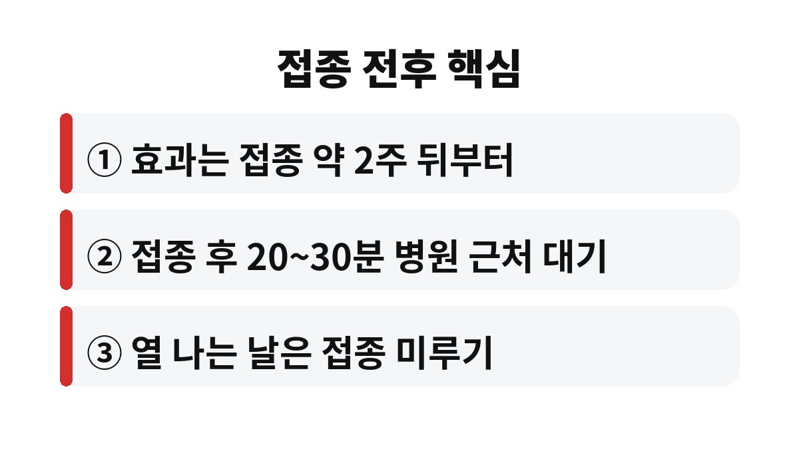
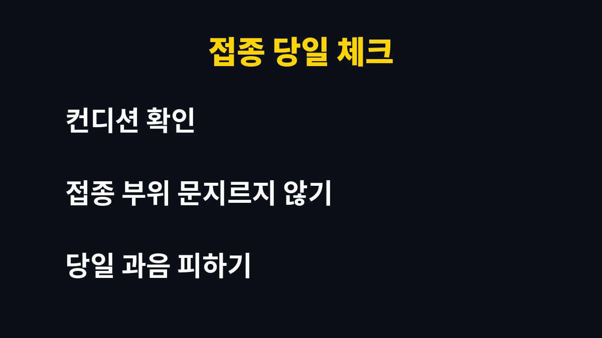

독감 예방접종은 맞은 직후가 아니라 보통 약 2주가 지나야 항체가 충분히 만들어진다고 알려져 있다. 11월 들어 아직 맞지 않은 직장인이라면, 지금 미루는 하루가 내 겨울 컨디션에 어떤 차이를 만드는지 궁금하지 않은가?
해마다 이맘때면 독감 주사를 맞을지 말지 고민하는 사람이 많다. 바쁘다는 이유로 미루다 보면 어느새 유행철이 코앞이다. 독감 예방접종의 효과가 언제부터 나타나는지, 맞고 나서는 무엇을 조심해야 하는지 차근차근 짚어본다.

많은 사람이 주사를 맞은 당일부터 보호를 받는다고 생각한다. 하지만 몸이 항체를 만드는 데는 시간이 필요하다. 일반적으로 접종 후 약 2주가 지나야 방어력이 갖춰진다고 설명된다. 그래서 유행이 본격화되기 전에 미리 맞아 두는 것이 권장된다.
이 말은 곧 접종 직후 독감 환자와 접촉하면 감염될 수 있다는 뜻이기도 하다. 맞았으니 안심이라며 마스크와 손 씻기를 놓아 버리면 오히려 손해가 될 수 있다. 접종 후 2주 동안은 평소보다 개인위생에 더 신경 쓰는 편이 좋다.
접종 후에는 병원이나 보건소 근처에서 20~30분가량 머물며 몸 상태를 살피는 것이 일반적인 안내이다. 드물게 나타나는 급성 알레르기 반응은 접종 직후에 생기는 경우가 많기 때문이다. 어지럼증, 두드러기, 숨 가쁨이 느껴지면 즉시 의료진에게 알려야 한다.
접종 부위가 뻐근하거나 약간의 미열, 근육통이 하루 이틀 나타나는 경우도 흔하다. 대부분 시간이 지나면 가라앉는다. 접종 부위는 세게 문지르지 않는 것이 좋고, 당일 과음과 무리한 운동은 피하는 편이 안전하다. 샤워는 일반적으로 가능하다고 안내된다.
열이 있거나 몸살로 컨디션이 나쁜 날에는 접종을 미루는 것이 원칙이다. 가벼운 감기 증상이라면 의료진 판단에 따라 접종이 가능할 수도 있다. 과거 백신 접종 후 심한 알레르기 반응을 겪은 적이 있거나 특정 성분에 알레르기가 있다면 접종 전에 반드시 의료진에게 알려야 한다.
임신 중이거나 만성질환으로 약을 복용 중인 사람도 접종 전에 상담을 받는 것이 안전하다. 부모님 세대처럼 고령이거나 기저질환이 있는 경우에는 독감이 폐렴 같은 합병증으로 이어질 수 있어 접종 시기를 더 서두르는 경우가 많다.
독감은 보통 겨울철 유행하므로 11월 안에 접종을 마치는 것이 이상적이라는 의견이 많다. 이미 11월이 시작됐다면 늦었다고 포기할 필요는 없다. 유행 기간 중에도 맞으면 남은 시즌 동안 도움이 될 수 있다. 중요한 것은 가능한 한 빨리 맞는 것이다.
직장인은 점심시간이나 퇴근길에 들를 수 있는 동네 병원을 미리 알아 두면 편하다. 접종은 몇 분이면 끝나지만 효과를 보려면 2주가 필요하다는 점을 기억해야 한다. 오늘 맞은 사람과 다음 달에 맞는 사람의 방어 시점은 그만큼 차이가 난다.
독감은 흔한 감기와 다르게 갑작스러운 고열, 심한 근육통, 극심한 피로감이 한꺼번에 몰려오는 경우가 많다. 감기는 콧물과 목 통증 위주로 서서히 진행되는 반면, 독감은 하루 이틀 사이에 일상이 멈출 만큼 몸이 무거워질 수 있다. 이 차이 때문에 직장인에게는 며칠간의 결근으로 이어지기도 한다.
또한 독감 바이러스는 해마다 유행하는 유형이 조금씩 달라진다. 지난해 맞았으니 올해는 괜찮다고 생각하기 쉽지만, 백신은 매년 새로 맞는 것이 권장된다. 시간이 지나면 항체가 줄어들고 유행 바이러스도 바뀌기 때문이다. 이 점을 알면 매년 가을 접종을 챙기는 이유가 이해된다.
가족 단위로 접종 일정을 맞추는 것도 좋은 방법이다. 아이와 부모님, 그리고 나까지 함께 맞아 두면 집 안에서 서로 옮기는 상황을 줄일 수 있다. 접종 전날은 충분히 자고 당일 아침은 가볍게 먹어 두는 것이 도움이 된다. 접종 후 이상 반응이 길어지면 지체하지 말고 병원을 찾아야 한다.
정리하면 독감 예방접종은 맞은 날이 아니라 약 2주 뒤부터 힘을 발휘하고, 접종 후에는 잠시 대기하며 몸 상태를 살피는 것이 좋다. 아직 맞지 않았다면 이번 주 안에 일정을 잡아 보는 것은 어떨까?

도움이 되셨다면 구독과 공감 부탁드린다.
※ 이 글은 일반적인 건강 정보이며 개인별 상태는 다를 수 있으므로 정확한 판단은 전문의 상담을 권장한다.